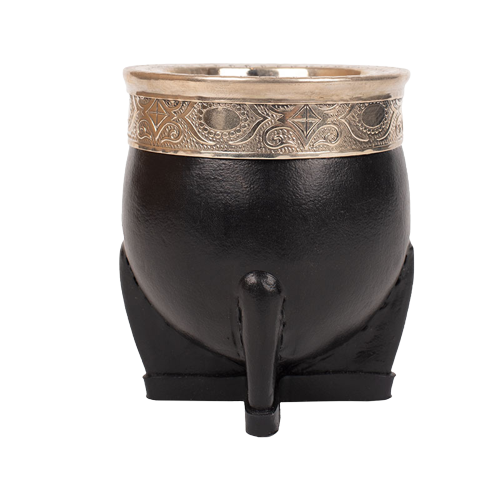
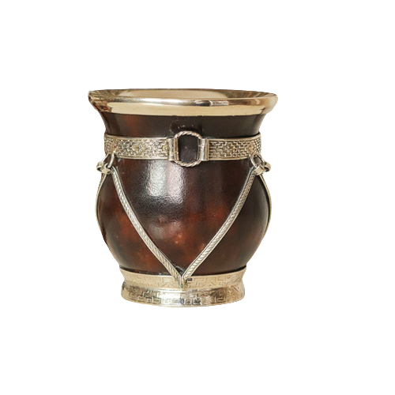
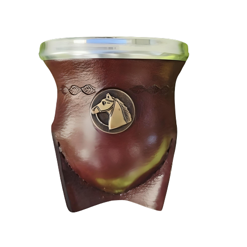

Somos una empresa que se dedica a la venta de mates, termos, bombillas y otros productos artesanales con diseños únicos e innovadores. Utilizamos materia prima de calidad y nuestras elaboraciones son 100% artesanales y hechas a mano. Personalizamos productos a pedido del cliente.
Acá podés encontrar alguno de nuestros productos:
  